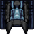

Mars Rescue
Your Mission: Following an equipment failure, humanity's top astrobiologist is stranded on Mars. NASA needs you to pilot the rescue mission. You will have to navigate a treacherous journey, littered with space debris. You will also need to collect fuel floating in space along the way. If you run out of fuel or collide with debris, your mission is a failure. Humanity is counting on you!
Instructions
Control your ship using the arrow keys ⬅️⬆️➡️⬇️buttons in the console. Toggle your speed boost with the "S" keyby tapping the icon. BEWARE: this will burn your fuel twice as fast as normal!
Dodge any debris objects . If you hit one, your ship will explode, and your mission is a failure.
Don't run out of fuel! You will need to collect floating fuel sources  along the way, which will replenish your fuel supply.
along the way, which will replenish your fuel supply.
Clear all 3 checkpoints to reach Mars. A checkpoint is clear when your Trip Progress meter reaches 100%, and you have successfully piloted that level without crashing or running out of fuel.